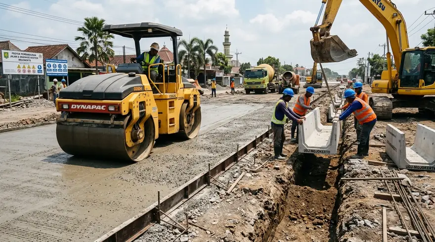

1. Analisa Pos Biaya Utama dalam Proyek Konstruksi di Mojokerto
Alokasi anggaran konstruksi terbagi secara proporsional guna menjamin integritas struktur dan penyelesaian estetika arsitektur.
Pekerjaan tanah dan pondasi menyerap sekitar 22-28% anggaran, pekerjaan rangka baja superstructure menyerap 32-38%, pekerjaan dinding arsitektur dan atap 18-24%, lantai heavy duty 14-18%, serta mekanikal elektrikal 8-12%.
Kedekatan pasokan pasir cor dan batu belah dari kuari resmi lereng pegunungan Mojokerto memberikan penghematan ongkos angkut armada dump truck yang cukup signifikan.
- Manfaatkan Material Lokal: Gunakan pasir cor dan batu kali kuari resmi Mojokerto selatan untuk menekan biaya transportasi material agregat kasar.
- Analisa Cut and Fill: Lakukan pengukuran topografi lahan berkontur untuk menyeimbangkan volume galian dan urukan tanah tanpa mendatangkan tanah luar.
- Jaminan SPK Resmi: Pastikan rincian BoQ mengunci harga satuan agar tidak terpengaruh fluktuasi harga material selama masa konstruksi.
2. Simulasi RAB Pembangunan Gedung Workshop Dimensi 800 m²
Simulasi biaya pembangunan gedung workshop rangka baja di wilayah Mojokerto seluas 800 m² menghasilkan estimasi sekitar Rp 2,07 Miliar.
Dalam simulasi BoQ terperinci, struktur baja WF terpasang menyerap Rp 742 juta, plat lantai beton K-350 tebal 15 cm dengan hardener menyerap Rp 432 juta, pondasi footplate dan sloof Rp 256 juta, atap spandek insulasi glasswool Rp 205 juta, dinding perimeter Rp 143 juta, serta MEP dan drainase luar Rp 200 juta.
Angka tersebut setara dengan Rp 2.599.000 per meter persegi, memberikan efisiensi investasi yang sangat menarik untuk fasilitas workshop industri.

Pekerjaan infrastruktur luar, jalan rigit beton, dan saluran drainase U-Ditch pada kawasan proyek.
3. Tabel Komparasi Biaya Konstruksi Antar Sektor di Mojokerto
Perbandingan biaya konstruksi per meter persegi untuk ruko, gudang industri, gedung kantor, dan perumahan di Mojokerto.
Tabel berikut memberikan gambaran komprehensif bagi investor dan pemilik proyek di wilayah Mojokerto Raya.
| Sektor Bangunan | Estimasi Biaya / m² | Spesifikasi Rangka & Pondasi | Durasi Pengerjaan |
|---|---|---|---|
| Gudang / Workshop Rangka Baja | Rp 2.600.000 – Rp 3.300.000 | Baja WF SNI, Lantai K-300 tebal 15 cm, Atap Spandek | 3.5 – 5 Bulan |
| Gedung Kantor / Perkantoran 2-3 Lt | Rp 3.500.000 – Rp 4.500.000 | Struktur Beton Bertulang K-250, Kusen Aluminium, Fasad ACP | 5 – 7 Bulan |
| Ruko Komersial Jalan Protokol | Rp 3.200.000 – Rp 4.000.000 | Strauss Pile + Cakar Ayam, Lantai Granit 60x60, Rolling Door | 4 – 5.5 Bulan |
| Pabrik Manufaktur Berat | Rp 3.600.000 – Rp 5.000.000 | Baja WF Heavy + Konsol Crane, Lantai K-350 Double Wiremesh | 5 – 8 Bulan |
4. Kunci Pengendalian Anggaran Proyek Bebas Overbudget
Kunci efisiensi terletak pada analisa geoteknik akurat, desain struktur presisi, dan pemilihan kontraktor satu pintu.
Dengan software pemodelan SAP2000, kami menghitung dimensi profil baja yang optimal tanpa mengurangi faktor keamanan gempa SNI, sehingga pemilik proyek tidak membayar kelebihan tonase baja yang sia-sia.
Pertanyaan yang Sering Diajukan (FAQ)
Kesimpulan Praktis
Efisiensi biaya konstruksi di Mojokerto adalah keuntungan strategis bagi para pelaku usaha dan investor yang ingin mendirikan fasilitas produksi maupun bangunan komersial.
Pastikan anggaran proyek Anda dikelola secara transparan dan profesional bersama Kontraktor Bangunan. Hubungi kami untuk konsultasi dan survei gratis di lokasi Anda.